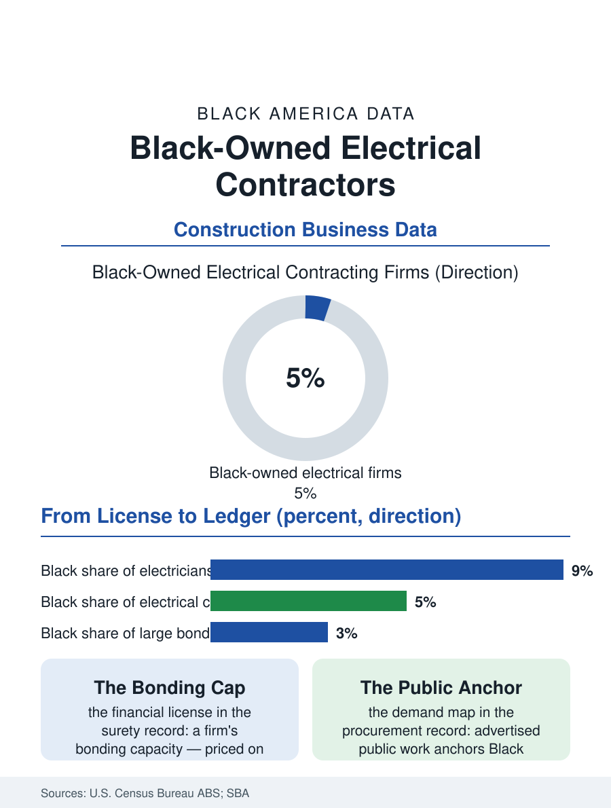

Black Business
The Bonded Ceiling: Black-Owned Electrical Contractors
Electrical contracting adds a financial license, bonding capacity, on top of the trade license, and that second gate is where Black firms' growth is decided. The contracting file.

The electrical contracting firm sits at the top of the trade ladder the electrician file describes: the apprentice's license, compounded by bonding, estimating skill, and a contractor's balance sheet, becomes a company that wires hospitals, schools, and data centers. Black-owned electrical contractors hold a modest share of the industry's employer firms in the federal business counts, concentrated in the metropolitan markets of the South and Midwest and in public-sector construction. This article reads the contracting file.
Bonding: The Industry's True License
Ask electrical contractors what limits growth and the answer arrives before wages or workers: bonding. Commercial and public electrical work requires performance and payment bonds, guarantees issued by surety companies against the contractor's financial strength, and a firm's bonding capacity, the total value of work it may carry, functions as a second, financial license on top of the trade license. Sureties underwrite on working capital, credit history, and completed-work record, a formula that converts the household wealth gap and the opportunity gap into a single binding number: the firm that has never been allowed a large job cannot show the record a large bond requires. The federal response built into this file is the Small Business Administration's bond guarantee program, which backstops sureties for small contractors, and state programs that pair bonding assistance with graduated public work. Black contractors' associations have documented the pattern for decades, their members' bonding lines growing where a public owner's program deliberately laddered them through rising project sizes, and freezing where the first opportunity stayed small. The estimate desk compounds it: bidding requires estimators, software, and the bid bonds posted on work mostly not won, overhead a firm must carry before its first dollar of revenue.
Public Work, Private Work, and the Mix
The demand side splits along the line this atlas keeps finding. Public construction, schools, transit, water systems, federal buildings, buys through advertised competition with enforceable small and minority business provisions in many jurisdictions, and it anchors the Black electrical contracting sector's strongest firms. Private commercial work, the office, warehouse, and retail buildout that constitutes most of the market, procures through general contractors' invited lists, where relationships and past joint work decide the invitation. The data-center boom has added a third stream: hyperscale electrical packages so large they are reshaping regional labor markets, awarded to a short list of national firms, with local participation flowing through joint ventures and subcontracting tiers the primes control. The Black firms in the industry record manage the mix deliberately: public work for the bonded track record, institutional service and maintenance for steady margin, selective joint ventures for scale, and a wary eye on any single customer growing large enough to own the firm's year. Union status draws another map line: signatory firms access the joint apprenticeship workforce and the largest commercial projects in the northern metros, while open-shop firms dominate the faster-growing southern markets, and Black contractors operate on both sides of that line in rough proportion to their regions.
The Succession Already Underway
The industry's age profile guarantees turnover. A large share of electrical contracting firms are founder-led and within a decade of a succession decision, and the consolidation buyers circling the trades are bidding for the same firms. For the Black contracting sector the succession question carries double weight: each firm is both a business and a piece of infrastructure, a bonding track record, a trained workforce, and a seat at bid tables that took a generation to earn, none of which survives a liquidation sale intact. The counter-models in the record are employee purchases, sales to the next Black-owned firm in the region, and the deliberate grooming of a chief estimator or operations lead, roles where the firm's bonding partners and customers can transfer their confidence while the founder still guarantees the work. Training consortia and contractor academies run by the national Black contractor associations formalize the other half of the pipeline, the new firm: licensing preparation, estimating instruction, surety introductions, and back-office systems taught as a curriculum rather than learned by loss. The contracting file closes on the industry's central tension. Demand for electrical work, grid upgrades, electrification, data centers, is outrunning the licensed workforce and the bonded firm capacity alike, and the only question the scarcity leaves open is whose firms the scarcity enriches. The bonding ledger, more than any other document in this atlas's business pages, is where that answer is being written.
More in Black Business
Black-Owned Businesses: Counts, Receipts, and the Representation Gap
About 161,000 Black-owned employer firms and three million solo ventures: how the Census Bureau counts Black business ownership, where firms concentrate, and the gap between population share and business share.
Black Median Net Worth: The Wealth Gap in Federal Reserve Data
The Federal Reserve puts Black median family net worth at $44,900, against $285,000 for White families — about 16 cents on the dollar. The widest gap in economic data.
Black Buying Power: The $1.8 Trillion Consumer Economy
Black buying power is estimated at about $1.8 trillion — larger than the economy of most nations. What the figure measures, who produces it, and what it buys.
Source: U.S. Census Bureau, Annual Business Survey (NAICS 23821); U.S. Small Business Administration surety bond guarantee program data; contractor association records.